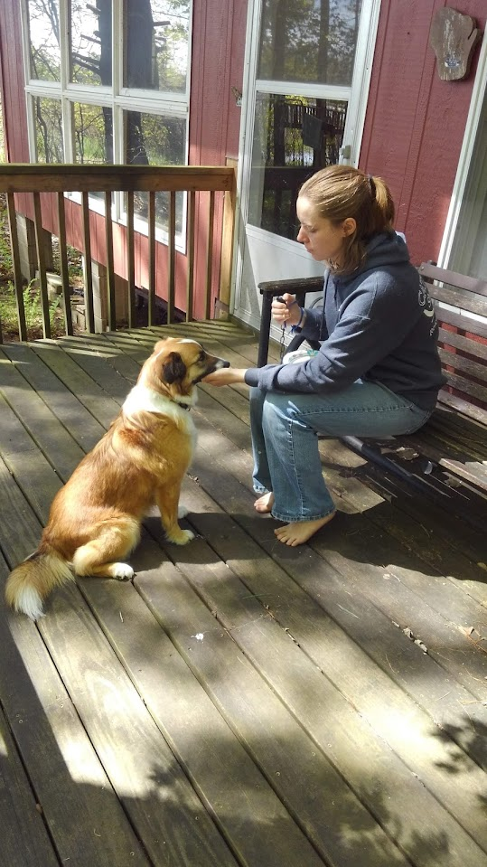

Virtual
I will meet with you in the comfort of your own home without the distraction of a visitor in person. This is a great option for very nervous pets who don’t take treats or who act very differently when visitors arrive. This is also the recommended option for a first meeting if there is a bite history. It can also be a great option for those outside of my service area. Virtual session training comes in packages of two meetings. Each meeting is conducted via zoom and will last 40 minutes. Two months of email support for the issues addressed is included. Anything not covered in the meeting package would need another appointment.